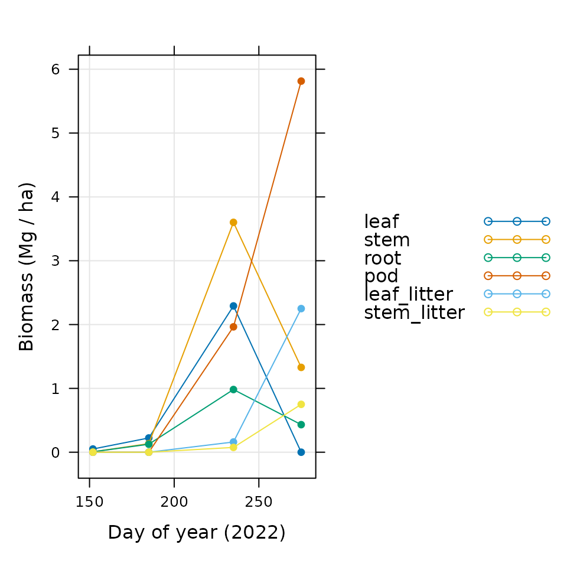

Handling Biomass Measurements
Source:vignettes/handling_biomass_measurements.Rmd
handling_biomass_measurements.RmdOverview
The BioCroField package includes several features
related to measuring and processing raw data from biomass harvests, with
the ultimate goal of producing values that are useful in the context of
crop growth modeling. In particular, the package includes the
following:
A crop harvest record sheet that can be used in the field to record relevant data.
A document describing a general protocol for weighing dry tissue.
Several crop-specific guides to harvesting and weighing tissue.
An R function that accepts all the information from a crop harvest record sheet and stores it in a convenient data structure.
Additional R functions that calculate key variables from the raw measurements and reorganize the results into a convenient format.
Together, these features provide a straightforward system for obtaining data and for creating a full record of its analysis. After collecting and measuring the plant material, a complete description of the data can be created as follows:
Store images of the completed crop harvest record sheets in a directory.
Store the commands used to digitize and process the data (such as the ones in the A Full Example section of this document) as an R script in the same directory.
Save the final biomass data table as a plain-text file in the same directory using
write.csv.
Now the final biomass values will be available in a simple CSV
format, and the exact steps taken to analyze the data will be clear to
anyone who looks at this directory in the future, including yourself!
Even though some details might not be immediately apparent from the
script, the documentation for the functions from
BioCroField will describe how the calculations were
made.
The rest of this document explains the types of biomass measurements
that are important in the context of crop growth modeling (in the Biomass and Leaf Area section), the
general steps required to collect tissue in the field (in the Harvesting Material section), the
general steps required to weigh the tissue (in the Weighing Tissue section), and how
BioCroField can be used to process the resulting data (in
the Processing Data with
BioCroField section). The final section (A
Full Example) shows a realistic example of how the functions from
BioCroField can be used to process a full biomass data set
from a field season.
Throughout the document, we will provide several examples of R
commands. These examples will use functions from the
BioCroField and lattice R packages, which must
be loaded first using commands such as the following:
# Load required packages
library(BioCroField)
library(lattice)If the lattice package is not installed on your R setup,
you can install it by typing
install.packages('lattice').
Biomass and Leaf Area
When farmers and crop scientists want to compare the productivity of different fields or varieties, they use a quantity called yield, which can be defined as the amount of harvested material per unit area. This is a loose and flexible definition; the type of harvested material depends on the particular crop in question; the amount can be specified as a volume, weight, or mass; and there are several systems of units customarily used in different locations around the world. Nevertheless, yield has proven to be a useful concept, at least partially because it is an intrinsic property that does not depend on the size of the field in which the crops were grown.
It is interesting to note that the harvested material per plant is far less useful. As crops are grown at higher densities, competition between the plants increases, and each plant tends to produce less output. Thus, the harvest per plant depends not only on the crop’s inhererent productivity but also the degree of competition between plants. On the other hand, there is often a fairly wide range of plant population (the number of plants per unit area) that can result in identical or similar yield; for example, maize in Illinois sown between April 5 and May 5 can reach 97% or higher of the maximum yield for populations between 24,000 and 36,000 plants per acre (Nafziger 1994). Thus, in most circumstances, the yield (on a per area basis) better reflects the true productivity of a crop without the complicating influence of competition.
In the context of crop growth modeling, we are typically interested in predicting the yield (as a mass per unit area) of a particular crop variety in a particular location. To do this, however, it is generally necessary to predict the amount of other plant components (as masses per unit area), such as the following:
Leaf: The amount of leaf mass determines the amount of carbon the crop is able to assimilate through the process of photosynthesis, so leaf mass is critical for calculating growth rates.
Root: The amount of root mass determines the amount of water and nitrogen the crop is able to obtain from the soil.
Litter: As a crop ages, it begins to lose tissue through the process of senescence. Some of the lost mass is recycled to other parts of the plant, and the remainder is shed, forming the litter. The competing processes of growth and senescence determine the masses of components like the leaf and root.
Total: Besides the components mentioned above, the crop also uses carbon to grow its stem and other reproductive material like flowers and pods. For accurate predictions, it is essential to accurately model the distribution of carbon throughout all the crop components.
Therefore, to validate a crop model, it is important to have experimental measurements for all these crop components, ideally at multiple times throughout a growing season. In addition to these masses, it is critical to measure the leaf area index (LAI), defined as the leaf area per unit ground area, which also plays a key role in simulating photosynthesis at the canopy level (Bréda 2003). If the model is able to reproduce these mass and leaf area measurements, we can have more faith that it will be able to make accurate yield predictions in other situations.
Harvesting Material
To make measurements of these important quantities, it is necessary to sow multiple plots and harvest plants from a single randomly-chosen plot several times throughout a growing season, ending at the final harvest. Each plot should also contain a wire mesh litter trap of known area, and each harvest will generally include the following steps:
Choose a section of a row with a known length; count the plants contained in the row section; cut each stem just above the ground; and collect all the above-ground portions of each plant in a bag to be dried and weighed. This can provide estimates for the population, the above-ground biomass (AGB) per unit area, and the AGB per plant. For this measurement, a length of row containing approximately 1-4 dozen plants (depending on their size and spacing) should be used.
Choose a smaller number of sequential plants (often half a dozen); cut each stem just above the ground; dig up and clean the roots of these plants; split the above-ground portions of the plants into components such as the stem, the living leaves, any senesced leaves still attached to the plant, and any reproductive parts like flowers or pods; and collect each separate component into a bag to be dried and weighed. Combined with the AGB measurements above, this process can provide estimates for the mass per area of each partitioned component. It also provides a second estimate of the AGB per plant that can be compared to the one determined in the previous step to determine whether the plants chosen for paritioning were representative of the plot as a whole.
Measure the total area of the living leaves that were partitioned in the previous step. This process can provide an estimate for the specific leaf area (SLA), defined as the leaf area per leaf mass. Then the SLA and the leaf mass per unit area determined in the previous step can be used to estimate the LAI.
Collect any litter that has fallen into the litter trap and put it in a bag to be dried and weighed. Combined with any senesced material still attached to the plant, this can provide an estimate for the litter formed through the process of senescence.
Note the importance of drying the collected tissue before weighing. The wet weight can vary greatly throughout the day and does not give an accurate reflection of the amount of material that has been truly incorporated into the structure of a crop. For instance, two meters of freshly cut sorghum plants often weighs more than two meters of freshly cut maize plants, but the maize is often heavier after drying because sorghum retains more water in its stems.
Pictures illustrating key parts of the harvest process can be found in the Images from the Field vignette (only available online).
Crop Harvest Record Sheets
The BioCroField R package includes a carefully designed
crop harvest record sheet that includes clearly-labeled blank areas for
recording all of the harvest information described above. Each sheet
represents the harvest of one plot at one time. Using these sheets in
the field will help you stay organized, and will make sure your data is
organized in a way that will facilitate later analysis. The record sheet
can be accessed from R using the access_sheet function from
BioCroField as follows:
access_sheet('harvest')The sheet is also available via the BioCroField GitHub
website.
When using this sheet, it is recommended to electronically fill out any fields whose values are known beforehand (such as location, year, row spacing, name, and contact) and then print out the necessary number of paper copies you will need throughout a field season.
Crop-Specific Guide Sheets
The details of harvesting are somewhat different for each particular
crop. The BioCroField R package includes crop-specific
guide sheets for several key crops with advice about harvesting them.
These guides can be accessed from R using the access_sheet
function from BioCroField as follows:
access_sheet('cowpea_guide')
access_sheet('grain_sorghum_guide')
access_sheet('maize_guide')
access_sheet('soybean_guide')They are also available via the BioCroField GitHub
website.
When using these sheets, it is recommended to print out one copy of each relevant crop guide so you can keep it on hand for reference while harvesting.
Weighing Tissue
Once the harvested tissue has been dried, it must be weighed. This is
a fairly straightforward process, but care must be taken to ensure that
the weights are reliable, and that all necessary tissue types have been
weighed. The BioCroField R package includes a document
describing a general protocol for doing this. It can be accessed from R
using the access_sheet function from
BioCroField as follows:
access_sheet('weighing_tissue')The details of weighing are somewhat different for each particular crop. The sheets discussed in the Crop-Specific Guide Sheets section include advice and instructions for weighing tissue from several key crops.
When using these sheets, it is recommended to print out one copy of the weighing protocol and one copy of each relevant crop guide so you can keep them on hand for reference while weighing.
Pictures illustrating key parts of the weighing process can be found in the Images from the Field vignette (only available online).
Processing Data with BioCroField
Digitizing Data
The harvest_point function from BioCroField
has been designed to digitize the data from one of these crop harvest
record sheets. The names of the input arguments to this function
generally match the fields present on the crop harvest record sheets,
making it simple and straighforward to transfer values from the sheet to
a computer. For example, a completed crop harvest record sheet might
look like the following image:
![Example of a completed crop harvest record sheet. This represents
information from a single biomass harvest performed on 2022-08-23, where
soybean (var. GM4000) was harvested from plot 3 at UIUC. The row spacing in
the plot was 0.7 m, and there were 150000 plants per acre. A row section 2
m long was harvested for above-ground biomass; this section included 47
plants, and its total dry weight was 1100 g. Six plants were used for
partitioning; their total leaf area was 9000 cm^2, their dry leaf mass was
35 g, their dry stem mass was 55 g, their dry root mass was 15 g, and their
dry pod mass was 30 g. The leaf, stem, and pod components of these plants
form their total above-ground biomass. Finally, a litter trap in the plot
with area 0.2 m^2 was found to contain 3.2 g of leaf litter and 1.5 g of
stem litter. The plant material was dried for 14 days before it was
weighed. _Note_: This is not real data, and GM4000 is not a real soybean
variety, although the values here are reasonable for a typical commercial
soybean cultivar.](images/example_harvest_sheet.jpg)
Example of a completed crop harvest record sheet. This represents information from a single biomass harvest performed on 2022-08-23, where soybean (var. GM4000) was harvested from plot 3 at UIUC. The row spacing in the plot was 0.7 m, and there were 150000 plants per acre. A row section 2 m long was harvested for above-ground biomass; this section included 47 plants, and its total dry weight was 1100 g. Six plants were used for partitioning; their total leaf area was 9000 cm^2, their dry leaf mass was 35 g, their dry stem mass was 55 g, their dry root mass was 15 g, and their dry pod mass was 30 g. The leaf, stem, and pod components of these plants form their total above-ground biomass. Finally, a litter trap in the plot with area 0.2 m^2 was found to contain 3.2 g of leaf litter and 1.5 g of stem litter. The plant material was dried for 14 days before it was weighed. Note: This is not real data, and GM4000 is not a real soybean variety, although the values here are reasonable for a typical commercial soybean cultivar.
In this case, the following command can be used to store the information from the sheet as an R data structure:
hp <- harvest_point(
crop = 'soybean',
variety = 'GM4000',
location = 'UIUC',
plot = 3,
year = 2022,
doy = 235,
planting_density = 150000,
row_spacing = 0.7,
partitioning_leaf_area = 9000,
partitioning_component_weights = list(leaf = 35, stem = 55, root = 15, pod = 30),
agb_components = c('leaf', 'stem', 'pod'),
agb_row_length = 2,
agb_weight = 1100,
trap_area = 0.2,
trap_component_weights = list(leaf_litter = 3.2, stem_litter = 1.5),
partitioning_nplants = 6,
agb_nplants = 47
)The output from this function is a harvest_point object
that represents all the information from the sheet. From a technical
point of view, a harvest_point object is just an R list
with a particular set of named elements. The information stored in it
can be viewed with standard R commands like print or
str. For example:
str(hp)
#> List of 20
#> $ crop : chr "soybean"
#> $ variety : chr "GM4000"
#> $ location : chr "UIUC"
#> $ plot : num 3
#> $ year : num 2022
#> $ doy : num 235
#> $ hour : num 12
#> $ planting_density : num 150000
#> $ row_spacing : num 0.7
#> $ plant_spacing : num 0.0385
#> $ partitioning_nplants : num 6
#> $ partitioning_leaf_area : num 9000
#> $ partitioning_component_weights:List of 4
#> ..$ leaf: num 35
#> ..$ stem: num 55
#> ..$ root: num 15
#> ..$ pod : num 30
#> $ agb_components : chr [1:3] "leaf" "stem" "pod"
#> $ agb_nplants : num 47
#> $ agb_row_length : num 2
#> $ agb_weight : num 1100
#> $ trap_area : num 0.2
#> $ trap_component_weights :List of 2
#> ..$ leaf_litter: num 3.2
#> ..$ stem_litter: num 1.5
#> $ additional_arguments : list()
#> - attr(*, "class")= chr [1:2] "harvest_point" "list"More information is available via the built-in help system by typing
?harvest_point in the R terminal.
Processing and Organizing Data
Once the data from one or more harvest record sheets has been stored
as an equal number of harvest_point objects, it is possible
to convert the raw weights, lengths, and areas into more convenient
values like biomass per unit area and leaf area index. This can be done
automatically using the process function from
BioCroField, which processes a single
harvest_point object to convert its information into a more
useful form. The following command illustrates how to process the
harvest_point defined above and view the processed
values:
hpp <- process(hp)
str(hpp)
#> List of 36
#> $ crop : chr "soybean"
#> $ variety : chr "GM4000"
#> $ location : chr "UIUC"
#> $ plot : num 3
#> $ year : num 2022
#> $ doy : num 235
#> $ hour : num 12
#> $ planting_density : num 150000
#> $ row_spacing : num 0.7
#> $ plant_spacing : num 0.0385
#> $ partitioning_nplants : num 6
#> $ partitioning_leaf_area : num 9000
#> $ partitioning_component_weights:List of 4
#> ..$ leaf: num 35
#> ..$ stem: num 55
#> ..$ root: num 15
#> ..$ pod : num 30
#> $ agb_components : chr [1:3] "leaf" "stem" "pod"
#> $ agb_nplants : num 47
#> $ agb_row_length : num 2
#> $ agb_weight : num 1100
#> $ trap_area : num 0.2
#> $ trap_component_weights :List of 2
#> ..$ leaf_litter: num 3.2
#> ..$ stem_litter: num 1.5
#> $ additional_arguments : list()
#> $ time : num 5628
#> $ partitioning_agb_weight : num 120
#> $ agb_per_plant_partitioning : num 20
#> $ agb_per_plant_row : num 23.4
#> $ measured_population : num 135864
#> $ agb_per_area : num 7.86
#> $ relative_components :List of 4
#> ..$ leaf: num 0.292
#> ..$ stem: num 0.458
#> ..$ root: num 0.125
#> ..$ pod : num 0.25
#> $ components_biocro :List of 4
#> ..$ leaf: num 2.29
#> ..$ stem: num 3.6
#> ..$ root: num 0.982
#> ..$ pod : num 1.96
#> $ LMA : num 38.9
#> $ LAI_from_LMA : num 5.89
#> $ LAI_from_planting_density : num 5.56
#> $ LAI_from_measured_population : num 5.04
#> $ leaf_area_per_plant : num 1500
#> $ SLA : num 2.57
#> $ trap_components_biocro :List of 2
#> ..$ leaf_litter: num 0.16
#> ..$ stem_litter: num 0.075
#> $ all_components_biocro :List of 6
#> ..$ leaf : num 2.29
#> ..$ stem : num 3.6
#> ..$ root : num 0.982
#> ..$ pod : num 1.96
#> ..$ leaf_litter: num 0.16
#> ..$ stem_litter: num 0.075
#> - attr(*, "class")= chr [1:2] "harvest_point" "list"The output from process is a harvest_point
object that has additional named elements that represent the newly
calculated values. More information is available via the built-in help
system by typing ?process in the R terminal.
Once the data from one or more harvest record sheets has been
processed, it can be reorganized into a data.frame, which
is often a convenient way to store and use the data. This can be done
using the biomass_table function from
BioCroField, which accepts one or more
harvest_point objects, extracts the most important
information from each one, and stores the information in one row of a
data.frame. Continuing the example above, we can create a
table with one row from the single harvest_point:
biomass <- biomass_table(hpp)
str(biomass)
#> 'data.frame': 1 obs. of 27 variables:
#> $ crop : chr "soybean"
#> $ variety : chr "GM4000"
#> $ location : chr "UIUC"
#> $ plot : num 3
#> $ year : num 2022
#> $ doy : num 235
#> $ hour : num 12
#> $ time : num 5628
#> $ leaf : num 2.29
#> $ stem : num 3.6
#> $ root : num 0.982
#> $ pod : num 1.96
#> $ leaf_litter : num 0.16
#> $ stem_litter : num 0.075
#> $ SLA : num 2.57
#> $ LMA : num 38.9
#> $ LAI_from_LMA : num 5.89
#> $ row_spacing : num 0.7
#> $ plant_spacing : num 0.0385
#> $ planting_density : num 150000
#> $ leaf_area_per_plant : num 1500
#> $ LAI_from_planting_density : num 5.56
#> $ LAI_from_measured_population: num 5.04
#> $ agb_per_area : num 7.86
#> $ agb_per_plant_row : num 23.4
#> $ agb_per_plant_partitioning : num 20
#> $ measured_population : num 135864With the data in this format, it can also be easily saved in a file
using the write.csv function from base R. More information
is available via the built-in help system by typing
?biomass_table in the R terminal.
Including Seed Mass
It is often useful to include information about the seeds that were
originally sown, such as the sowing date and the initial biomass per
unit area in the field, even though this is not truly “harvest”
information. These details can be included in a biomass data table (as
created by biomass_table) using the
add_seed_biomass function from BioCroField.
This operation is included in the Full
Example below. More information is available via the built-in help
system by typing ?add_seed_biomass in the R terminal.
A Full Example
In this section, we will provide an example where biomass data from three separate harvests are combined into a table along with information about the initial seed mass. Note: This is not real data, and GM4000 is not a real soybean variety, although the values here are reasonable for a typical commercial soybean cultivar.
# Specify some pieces of information that are the same for all harvests
crop <- 'soybean'
variety <- 'GM4000'
location <- 'UIUC'
year <- 2022
agb_row_length <- 2
planting_density <- 150000
row_spacing <- 0.7
trap_area <- 0.2
partitioning_nplants <- 6
# Store the measured data values as a list of harvest_point objects
biomass_measurements <- list(
harvest_point(
crop = crop,
variety = variety,
location = location,
plot = 2,
year = year,
doy = 185,
planting_density = planting_density,
row_spacing = row_spacing,
partitioning_leaf_area = 500,
partitioning_component_weights = list(leaf = 2.5, stem = 1.5, root = 1.4),
agb_components = c('leaf', 'stem'),
agb_row_length = agb_row_length,
agb_weight = 50,
trap_area = trap_area,
trap_component_weights = list(),
partitioning_nplants = partitioning_nplants,
agb_nplants = 46
),
harvest_point(
crop = crop,
variety = variety,
location = location,
plot = 3,
year = year,
doy = 235,
planting_density = planting_density,
row_spacing = row_spacing,
partitioning_leaf_area = 9000,
partitioning_component_weights = list(leaf = 35, stem = 55, root = 15, pod = 30),
agb_components = c('leaf', 'stem', 'pod'),
agb_row_length = agb_row_length,
agb_weight = 1100,
trap_area = trap_area,
trap_component_weights = list(leaf_litter = 3.2, stem_litter = 1.5),
partitioning_nplants = partitioning_nplants,
agb_nplants = 47
),
harvest_point(
crop = crop,
variety = variety,
location = location,
plot = 1,
year = year,
doy = 275,
planting_density = planting_density,
row_spacing = row_spacing,
partitioning_leaf_area = 0,
partitioning_component_weights = list(leaf = 0, stem = 40, root = 13, pod = 175, seed = 130),
agb_components = c('leaf', 'stem', 'pod'),
agb_row_length = agb_row_length,
agb_weight = 1000,
trap_area = trap_area,
trap_component_weights = list(leaf_litter = 45, stem_litter = 15),
partitioning_nplants = partitioning_nplants,
agb_nplants = 51
)
)
# Convert measured values into masses per area in BioCro units
processed_biomass_measurements <- lapply(biomass_measurements, process)
# Specify mass values that should be set to zero when not explicitly measured
zero_when_missing <- c('pod', 'leaf_litter', 'stem_litter')
# Reorganize values into a data frame
soybean_biomass <- do.call(
biomass_table,
c(processed_biomass_measurements, list(zero_when_missing = zero_when_missing))
)
# Add the initial values to the data frame
soybean_biomass <- add_seed_biomass(
soybean_biomass,
year = year,
doy = 152,
seed_mass = 0.17,
zero_when_missing = zero_when_missing,
component_fractions = list(leaf = 0.8, stem = 0.1, root = 0.1)
)Now we can take a look at the final data values:
str(soybean_biomass)
#> 'data.frame': 4 obs. of 29 variables:
#> $ crop : chr "soybean" "soybean" "soybean" "soybean"
#> $ variety : chr "GM4000" "GM4000" "GM4000" "GM4000"
#> $ location : chr "UIUC" "UIUC" "UIUC" "UIUC"
#> $ plot : num NA 2 3 1
#> $ year : num 2022 2022 2022 2022
#> $ doy : num 152 185 235 275
#> $ hour : num 12 12 12 12
#> $ time : num 3636 4428 5628 6588
#> $ leaf : num 0.0504 0.2232 2.2917 0
#> $ stem : num 0.0063 0.1339 3.6012 1.3289
#> $ root : num 0.0063 0.125 0.9821 0.4319
#> $ pod : num 0 0 1.96 5.81
#> $ leaf_litter : num 0 0 0.16 2.25
#> $ stem_litter : num 0 0 0.075 0.75
#> $ seed : num NA NA NA 4.32
#> $ SLA : num NA 2 2.57 NA
#> $ LMA : num NA 50 38.9 NA
#> $ LAI_from_LMA : num 0 0.446 5.893 0
#> $ row_spacing : num 0.7 0.7 0.7 0.7
#> $ plant_spacing : num 0.0385 0.0385 0.0385 0.0385
#> $ planting_density : num 150000 150000 150000 150000
#> $ leaf_area_per_plant : num NA 83.3 1500 0
#> $ LAI_from_planting_density : num 0 0.309 5.56 0
#> $ LAI_from_measured_population: num 0 0.274 5.036 0
#> $ agb_per_area : num NA 0.357 7.857 7.143
#> $ agb_per_plant_row : num NA 1.09 23.4 19.61
#> $ agb_per_plant_partitioning : num NA 0.667 20 35.833
#> $ measured_population : num NA 132973 135864 147426
#> $ initial_seed : num 0.063 NA NA NAIt is also easy to graph them:
xyplot(
leaf + stem + root + pod + leaf_litter + stem_litter ~ doy,
data = soybean_biomass,
type = 'b',
pch = 16,
auto = TRUE,
grid = TRUE,
xlab = 'Day of year (2022)',
ylab = 'Biomass (Mg / ha)'
)
Optionally, the final biomass table can be saved as a CSV file or as an R data file; one or both of these commands could be included in a processing script: